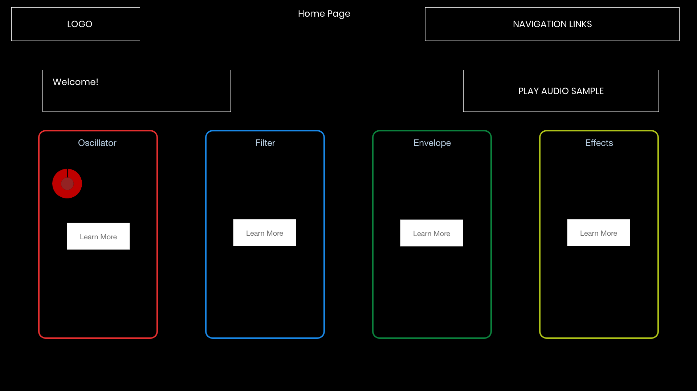
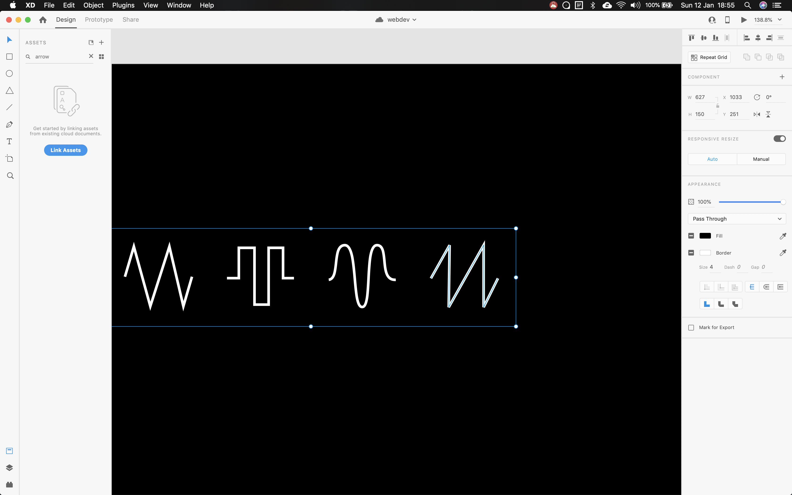

Report: Large Coursework
Andrea Spiteri
Link To Website:
http://doc.gold.ac.uk/~aspit002/webDev/LargeCourseWork/Link to Index Page:
index Page.My website is a guide for the different parts of a synthesizer. I tried to keep it as simple as possible so that people with no prior knowledge can maybe understand something about sound designing on a synthesizer by the end of it.
I created this with a number of people in mind.
There is a large synthesizer enthusiast community online. Perhaps some enthusiasts might share this with their friends to spread the joy of synthesizers.
I was mainly inspired by the synthesisers that I own and the many many hours I have spent playing them. I based the color pallet of the website on a synthesizer called the “Juno 6” by a Japanese company called “Roland”. This is a classic synthesizer that came out in the 80s. My inspiration also comes from all the artists I listen to such as Depeche Mode, OMD, Bjork, Tears For Fears that made me love these machines so much. I also found it interesting that we can achieve basic sound synthesis on the web. I still remember when HTML 5 came out and things like drum machines where appearing on the web (link below to an example).
I implemented a very simple structure which consists of a navigation bar which is a flex box, and the main content which is a grid divided into two columns. One column for all the text and information, and the other with a visual interactive element. This very basic structure made it easy when making the pages responsive for multiple devices.
I regrettably didn’t spend too much time on accessibility. I provided ":focus" tags for buttons and “alt=“ attributes for images, but neglected sliders I have on certain pages. I used Firefox accessibility tools and it provided this message, “Interactive elements must be able to be activated using a keyboard”. This is something I did not implement because I could’t figure out how to on time. It is something I intend on implementing however. Sliders also do not have any focus styling or tab index styling.
For all the interactive elements on my website, I’ve provided clear instructions on what they do. I made the website responsive so that it can be used on tablets and smart phones. I’ve tried my best at keeping the layout and walk through clean and simple. After I built my website I had my sister (who has no knowledge of synthesisers) test run it. She didn’t seem to have any issues navigating the website or understanding the content.
I learned how to implement responsive design (not something I did on the group course work). I used the Mozilla MDN resources for this.
I learned how to have multiple instances of a canvas for my home page using p5.js library. It took a while to figure out because p5.js does not allow multiple canvases on the same page unless using p5.js on a certain mode appropriately named “instance mode”. I modified code they provide in their documentation for this.
I learned a lot about web audio through the p5.js.sound library as well as Mozilla MDN. I intend to program something using the Web MIDI API which is well documented on Mozilla MDN.
I learned about JS timeout functions.
A smaller thing I learned but genuinely took me 30 minutes to figure out. How Adobe’s curved line tool works.
As mentioned before, I used the p5.js and p5.sound.js libraries. I used FireFox a lot for styling and debugging JS logic. I also used adobe XD for designing the wire frame. I also used adobe XD to make the logo and the only image my website has. I used ProTools and one of my synthesizers to record a small melody featured on the page titled “effects.html”. The IDE I used is JetBrains IntelliJ.
I am really please with all the interactive elements. I think they really aid in the understanding of the basics in sound synthesis. Event though the color scheme and design of the website is very minimalist, I find it aesthetically appealing. I’m pleased with the home page. I think it immediately gives the user a lot to look at and feel intrigued.
Like I mentioned before, I couldn’t get my sliders to have the appropriate accessibility properties. I simply ran out of time here. I need to spend more time in the Mozilla MDN documentation and work through why my logic wasn’t working.
On every page I provide a warning to the user that potentially loud audio is to be played. I would do this differently. Having a volume slider is a better solution to this, and providing a pop up warning when the user tries to play audio for the first time.
Looking at my CSS in the end I’ve come to realise the I have a lot of unnecessary class styling. I could definitely clean this up and in future be more aware of the different inheritances happening on elements.
Author and year published for this source is unknown.
Tutorial Republic, ‘How to change image on hover with CSS’ Available: https://www.tutorialrepublic.com/faq/how-to-change-image-on-hover-with-css.php. [Accessed: 10-Jan-2020]
Author Unknown, Year Published Unknown, ’Frequency Spectrum’ Available: https://p5js.org/examples/sound-frequency-spectrum.html [Accessed: 11-Jan-2020]
spiricom, ’Oscilloscope with Trigger ramping’ Available: https://editor.p5js.org/spiricom/sketches/rJTP2-ztg [Accessed: 10-Jan-2020]
Site Map:
Wire Frame:
Designing assets in Adobe XD:
Assets:
W3C Markup:
Link To Website:
http://doc.gold.ac.uk/~aspit002/webDev/LargeCourseWork/